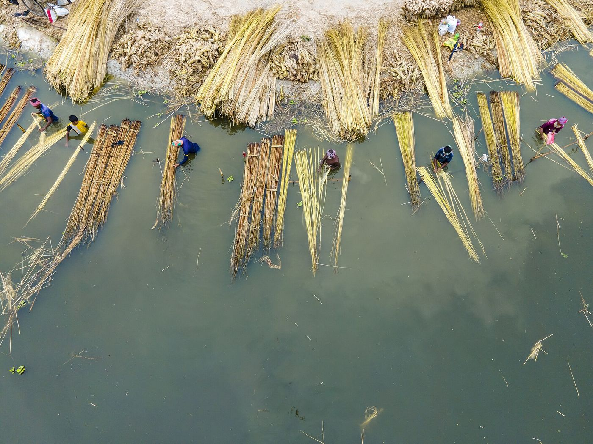
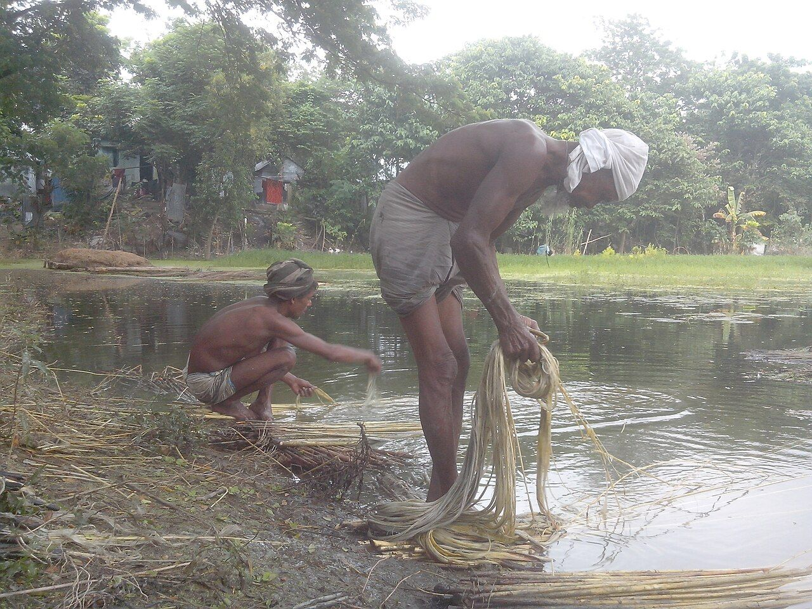
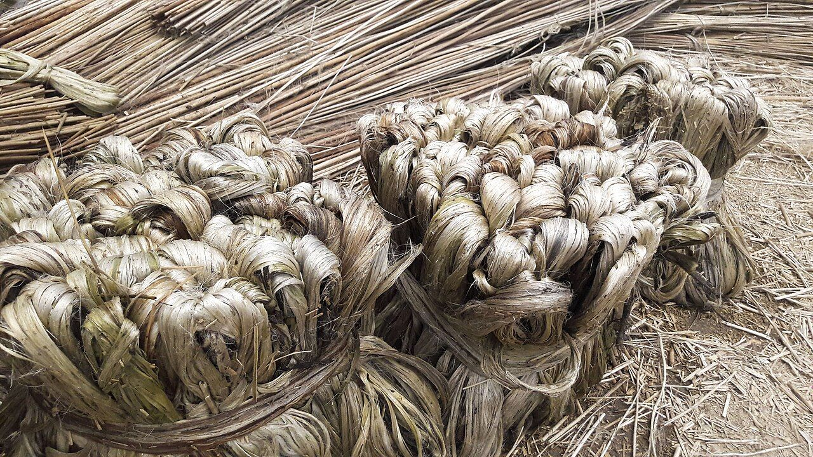
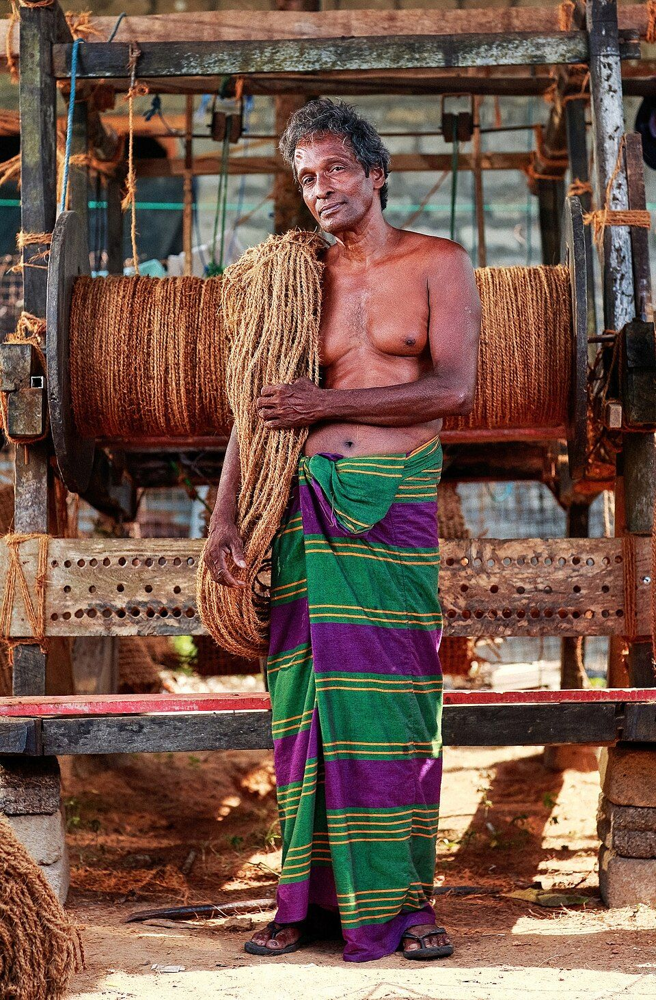
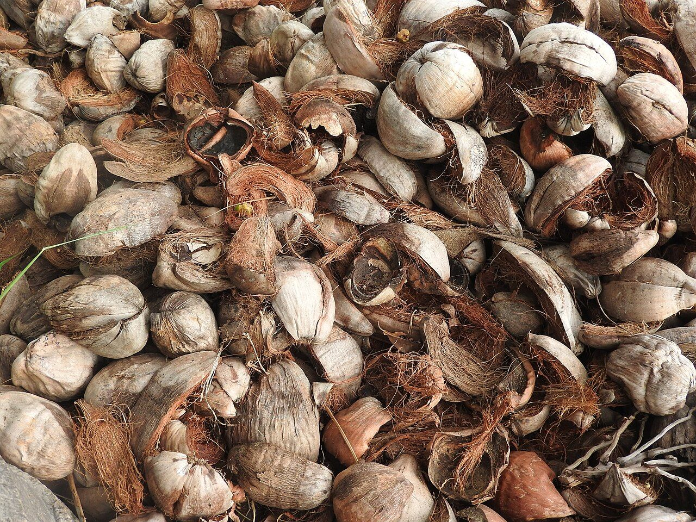

A practical appreciation for natural fibres.
Coir and jute bring distinct textures and functional qualities to home products, horticulture, packaging and landscape applications. The right choice depends on the use, construction and specification.

Different fibres. Different strengths.
Coir is derived from the husk of the coconut. Jute is a bast fibre used in woven and textile formats. Product performance varies with fibre grade, yarn, weave, treatment and construction.
Commonly used in mats, garden products and geo-textile formats where its coarse, resilient structure is useful.
Known for its natural woven character and used in bags, decor, packaging and related products.

The people behind the weave.
From peeling jute bast to twisting coconut rope, every product begins with skilled hands and natural raw material.



Specific claims. Clear conditions.
Natural origin is a starting point, not a substitute for lifecycle evidence. We aim to describe materials and end-of-life considerations responsibly.
Material origin
Describe fibre composition and sourcing at product level wherever verified information is available.
Use & durability
Match product construction and care guidance to the intended service environment.
End-of-life context
Biodegradation and compostability depend on coatings, blends, conditions and local facilities.
No blanket claims of 100% compostability, carbon negativity, plastic-replacement tonnage or fixed biodegradation timelines are made here. Such statements require supporting evidence and clearly defined conditions.